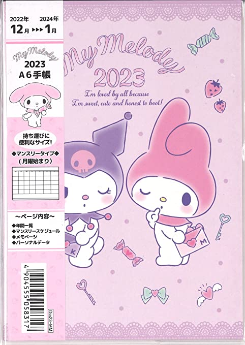
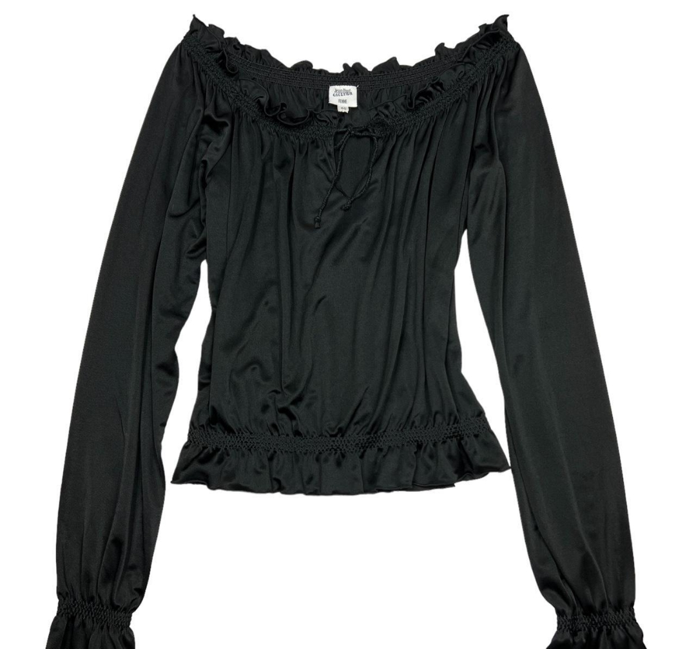
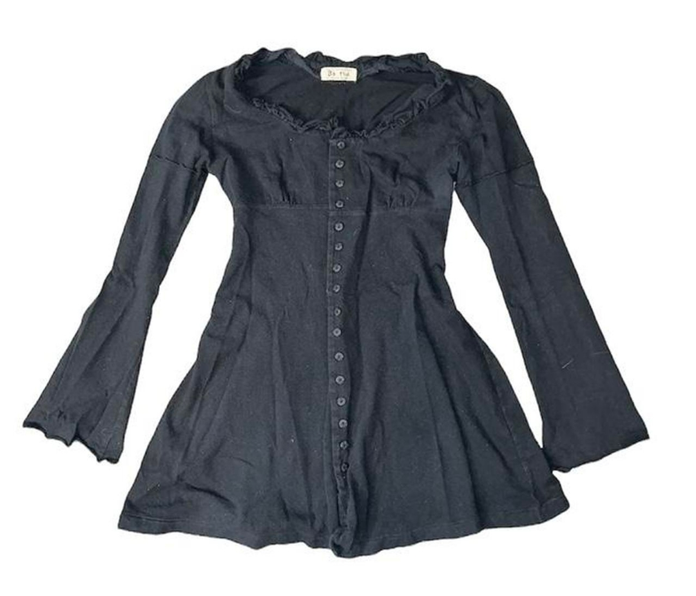
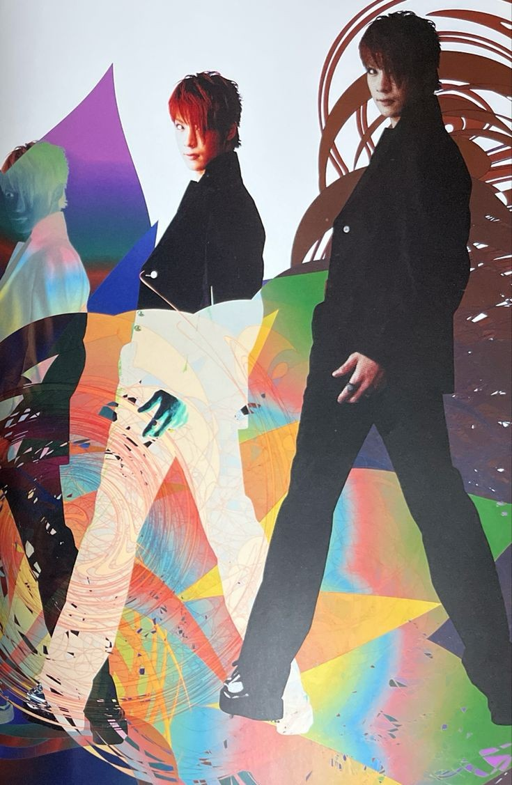
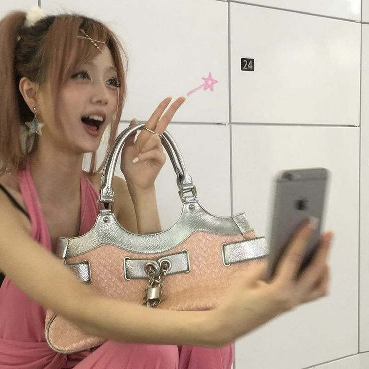
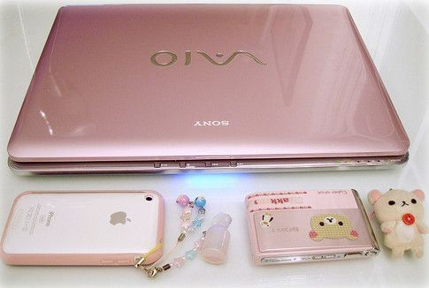
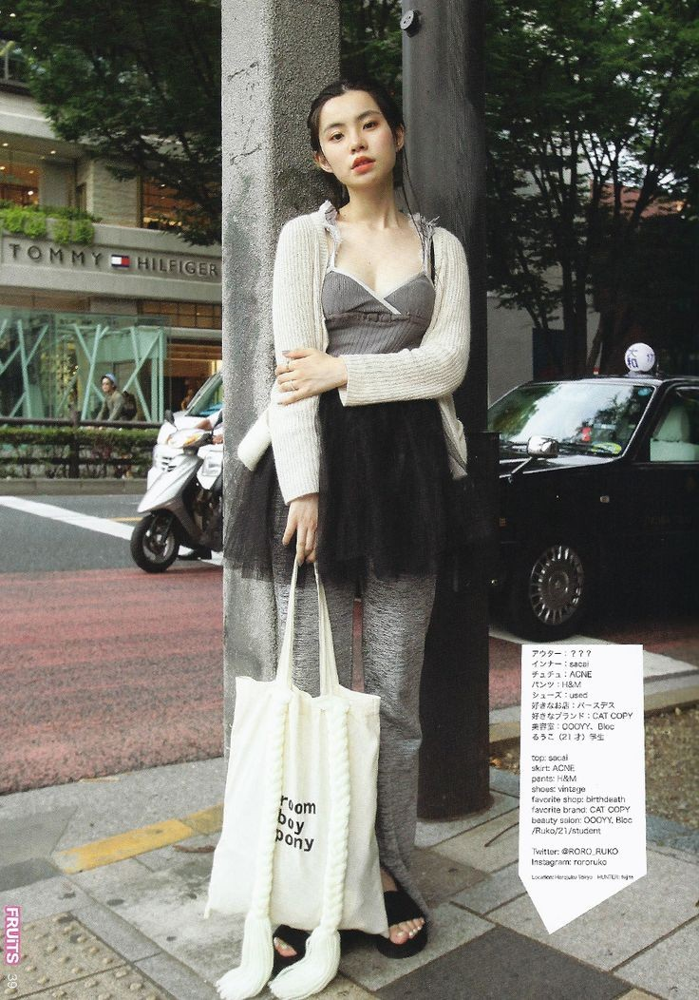
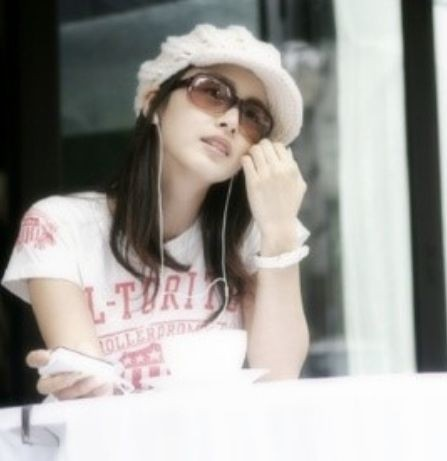

I want to be able to create more but I keep getting into mental blocks (not necessarily art block, more so a lack of desire to start anything and just feeling nothingness, which honestly might just be depression). I see so many cool things being created online by people I respect a lot, and I want to do so much but I just feel like I can't. Also, I never realized how much the medium of which i create my art through affects my art. How I feel towards creation and what I am inspired to make in Clip Studio Paint is very different from Procreate, iPad notes app etc.etc.
I'll just write down some things I would like to do:
➔ Learn Blender. I've been saying this for the longest time, and I keep telling myself I'd do it.
➔ Make my site cooler. I am happy with how my homepage looks but some of my pages look super boring and uninspiring. Why do I have to be so basic?
➔ Create 3D artworks. This kind of ties into the whole Blender thing, but I would love to make metalheart graphics. I like to draw abstract squiggles and waves, and I had only found out a couple years ago that metalheart was a thing. I was so excited to find a visual "aesthetic" or design language that resembled the things I liked to create, and I would like to make some cool metalheart or abstract 3D graphics. I also want to combine it with my 2D illustrations.
➔ Create music. Making electronic music has been a dream for me since I was in 5th grade but it's been over 10 years and I still haven't started. I'll figure something out. The goal is to work with analog synthesizers but that requires money and I do not have much.
➔ Another thought. I wish I was better at writing. I write like a kid and that frustrates me but I guess if I get my idea across that's all that matters.
All in all, this is what sums up how i feel: I feel like no matter what I create, it isn't good enough. And I feel the need to keep striving for higher standards and make cooler things. I wish this feeling would go away.
I feel the need to always be at a more "complete" version of myself and compare myself to what I am not. I want to be okay with who I am now, in this current moment.
Anyways, here is my desktop! I switched my taskbar to Aero and I remembered how much I loved Windows 7's aero design.
/blog/さいきん
November 28, 2022
Recently I had a conversation regarding my art and the process of creation in general, and I realized that I still very much have great insecurity regarding my art. I'm not going to go into too much detail because I don't think it is actually a good idea for me to do so, but I am having an identity crisis with my art. I feel like my art should represent my interests, but I also know that my art doesn't have to 100% encompass who I am. I see a lot of artists online whose art is a reflection of their interests and influences, but I don't feel feel like my art is. So I try to draw with my interests in influence but then it feels more foreign and more removed. I'll figure something out.
That aside, I am playing katamari damacy!!! When I got my PSP two months ago-ish I got 僕の私の塊魂 but the controls were a little finnicky (I have not played katamari before). Also since it was a very legal download, there was no BGM to each level. No music in katamari?? Unplayable. So I didn't play for a little bit.
My 彼女 got katamari damacy REROLL on their Switch a couple days ago and I am lowkey obsessed now. Everything from the music to the art (Four Colors - here is a link to CARI's page) is so great. I love how interestingly the dialogue is written and the cousins are so so cute.
My favorites so far are:
ichigo, marny, jungle, marcy, june and of course, the prince.
Honestly, I like all of them.
Here are the tracks that I like the most!
They're all so great. In conclusion, the entire game is fantastic. The only thing I find not so great is the fact that I am so bad at controlling the katamari but I hope that will change and I will improve with time.
/blog/( ◡‿◡ )
November 14, 2022
Another entry in which I can sit down and thought dump! I've been working on a new drawing - basically spent hours drawing and meticulously rendering with pencil only for me to render over everything with a circle brush... I wanted to draw and color in a softer style (ririfa浮-esque) but it wasn't working out so I am basically redrawing and re-rendering my entire drawing. On the flipside, I am very happy with how it's looking now (though for some reason the pencilwork version looks like she is tilted to her left but in the circle brush rendered version she is facing completely forward? I need to decide if I'm going to keep keep her looking centered or shade so she's looking to her left...orz)
I was also going to draw a full Matsuri Hino-style background but I gave up (which you'll be able to see once I finish the drawing and upload the speedpaint on youtube). Instead I added some illustrative motifs such as the emblem and ribbon (and the frame!), which kind of feels like a cop-out... (→_→) but I'm still happy with how it looks so that's all that matters.
Overall I'm very pleased with how everything is looking so far so it's just a matter of sitting down and rendering.
Speaking of, I also think it's the first time I've actually discussed my art influences for a drawing I'm working on. I usually avoid doing so and I wrote about it previously in my journal (titled 2022-05-27 (3)). Adding onto that, I also avoid sharing what artists that I like because I get influenced and inspired by these artists, so inevitably those influenes will be seen in my art. There were a couple times (around 3 years ago) when people have commented that my artwork reminds them of this person or that person, and that really fueled my insecurity. I felt that if people look at my art and get reminded of some other artist, my identity as an artist is that much more invalid. Hence, I didn't want to share what artists that I liked in fear of losing myself.
That's kind of changing nowadays as I find myself being more comfortable sharing who I'm being influenced by. My relationship with art has definitely improved a lot since then and the feeling of dread whenever I think about drawing disappears every day. In my previous entry here I wrote that I've "been spending the last couple weeks just re-learning to like what i like... i always feel like i need to fit into a certain mold or have a cohesive aesthetic - which is nice, but humans aren't one-dimensional creatures. that's why i keep overhauling my website and making large changes, but i'm learning to be okay with that. it's not that i'm rebranding myself or becoming a new person every couple days. i still like what i like and those things haven't changed since middle school. it's just a matter of learning to express those in a healthy way that i feel comfortable and proud in."
And that's basically what I've been doing! I've been revisiting my old childhood favorite shoujo mangas and mangakas and it's reminding me of the things that make me truly happy and the art that inspired me to draw in the first place as a child.
I had forgotten how much Tanemura-sensei influenced me as a child. So in the name of nostalgia and re-living my childhood, I rewatched all of Sugar Sugar Rune recently. I was planning on rewatching Shugo Chara as well, but I want to rewatch it in Korean (which is how I consumed Shugo Chara content as a child), so I'm rewatching K-on! instead. Hopefully I'll be able to find a good streaming site (☆ω☆).
/blog/learning to
November 14, 2022
The weather's getting colder and gloomier every day. I can definitely feel it affecting my mood and my general mental health, and the amount of times I feel like I'm walking through fog increases by the day. I don't want so gloomy but I can't help but feel that way. The precipitation also makes dressing for the day a little annoying because I don't want my work shoes to get soaked, but changing shoes means more luggage for me. On the flip side, I do appreciate the colder weather though because it means I can turn the heater on without feeling too stuffy, and I could also wear my thicker coat without sweating later in the day.
I have been learning how to love though. Love can mean a variety of things, but it also includes showing the people around me that I care and making them feel appreciated. People do frequently tell me to reach out more, but it's very difficult for me. I also realize that the way I comfort people may not actually make them feel better. I want to work on how I show appreciation, how I comfort, how I reveal my feelings - in a healthy way for both myself and the other person.
Besides that, nothing super new in my life. Just money and health problems as usual. My doctor's appointments keep getting rescheduled and pushed back, and trying to balance my increasingly unstable body condition with work is exhausting (both my physical and mental health gets significantly worse in cold weather).
/blog/suki.｡.:*♡
November 8, 2022
Been spending the last couple weeks just re-learning to like what I like... I always feel like I need to fit into a certain mold or have a cohesive aesthetic - which is nice, but humans aren't one-dimensional creatures. That's why I keep overhauling my website and making large changes, but I'm learning to be okay with that. It's not that I'm rebranding myself or becoming a new person every couple days. I still like what I like and those things haven't changed since middle school. It's just a matter of learning to express those in a healthy way that I feel comfortable and proud in.
I've been having pretty intense art block. Honestly, it probably has to do with the fact I'm working out my interests and methods of expression (as mentioned above). Since i've been mostly working, I don't spend time outside much - so when I do go outside, I've been dressing up! I feel so cute when I dress the way I want to ( ´ ▽ ` ).｡ｏ
Just thought that I could now take this time to use this section of my site for what it was intended for, which was to share the things that I'm liking at the moment! I've been rereading Nana (for like the 7th time, the last time I reread it was about 2 years ago?). I recently broke my favorite glass cup so I purchased a strawberry cup to replace it! I only got one for myself instead of a pair (╯_╰)
I also found some cute shirts and skirts on depop that I would like to purchase sometime! I am now almost exclusively shopping second-hand (except for things like undergarments and socks). There is also this nice floral blouse that my mom was going to give me years ago, so when I go home in the holidays I might pick it up :3
Here are some things I want to purchase (some I can only dream of buying, so expensive!!):



Still on the lookout for some h.naoto pieces (esp h.naoto blood) that I can purchase... hoping to get my hands on some of the pieces I posted above by next April, unless someone else buys them.
Here are also some pictures I found/screenshotted that I would like to share:





That's all for now! I'm glad I was able to share some things I've been enjoying. Honestly I've been putting it off because it involves a lot of sitting down and formatting, and without my laptop it becomes a little more difficult to do. I'll be trying to update as often as I can! (๑˃ᴗ˂)ﻭ
/blog/life, again
November 7, 2022
it's been a while since i've updated my journal! my laptop broke around 2 weeks ago, so i haven't been able to update my site as regularly as i would like to (editing on the ipad is hell - hopefully i can figure a good system out soon). i am finally able to send out my laptop for repairs today!! hoping that i'll be able to get it back before i go back home for the winter holidays (dell has been very difficult to work with orz).
nothing really new in my life... just money problems and figuring out my health... (︶︹︺)
thinking about overhauling my site again sometimes soon? i don't really identify with this more corporate-looking version of the website. i want to figure out the best version of the forum-board(?) version of my site? yeah. once i get my laptop back or am able to sit at a computer for a bit i'll get on doing that.
/blog/vestige of data
November 1, 2022
my laptop is broken! i've been trying to get it repaired but dell's customer service has been difficult to work with. hence why i haven't updated my website since October 13th (most of it is because i've been lazy (シ. .)シ). Anyways, I'm currently using a public computer to update and hopefully nothing goes wrong.
Life has been pretty hectic and there are so many things I want to share but since I am unable to do a lot for my site at the moment I'll just share a new drawing that I finished a couple weeks ago!
vestige of data (Procreate, 2022)
I'm very proud of this one and I'm glad that I was able to get back into colour. I tried playing around with more saturated colours (saturated for what I usually draw) and I'm very pleased with the outcome!
This is it for now and hopefully I can get my laptop fixed soon!
/blog/emergency system shutdown
October 17, 2022
i'm going to use this page to place things i've done/like that i feel represents me the most at the moment of posting. also going to share things that i've found or want to share! i downloaded procreate recently and it took me a couple tries to get used to the workflow (as i moved from Clip Studio Paint). i'm actually quite proud of this drawing and i hope you guys like it too.
emergency system shutdown (Procreate, 2022)
/blog/overhaul
October 13, 2022
i overhauled my website! changed up a lot of things with the design and also how i organize my content. i'm still figuring out where i want to put things. when i make things, most of the time i don't feel that it represents me 100%. since i'm constantly changing, some things that i make are a spur of the moment and when i look back at it, i'm not as inclined to share it with people. so i added *✧･ﾟ: blog :･ﾟ✧* to share the artwork and things i create that i feel very proud of. due to the nature of who i am and how i like to create and share things, i'll probably adopt a similar posting structure to my illustrations & visual section - adding a dropdown menu for archived moments. i'll continuously keep adding things and that will probably act more like a journal than this page.
site updates will contain: a short summary of site updates, such as new artwork, any changes to organization etc.
journal will contain: an explanation of my site updates; any major life updates that i feel require a more thorough writing; a way for me to come to terms with some things. will be more serious and about "real-life". maybe some random thoughts i have about this site.
*✧･ﾟ: blog :･ﾟ✧* will contain: sharing things that i like in a regular manner. will be lighthearted and fun!
i may delete 好きのもの depending on if i feel the above sections serve better purpose.
/blog/regression
September 11, 2022
i can feel myself regressing. i don't know how to describe it.
It's not that I am reverting back to my unhealthy habits. I've definitely grown a lot in the past year, especially the past 4 months. But the way I feel is the same way I've felt years ago. It might be because the weather is getting colder.
But I can feel the loneliness and despair start to kick in. I can remember my daily life being so colorless and feeling nothing. And I'm slowly feeling like that now. I'm not trying to sound edgy but it's coming out that way.
I've been in my room alone for the past week because of covid and it's not treating me well.
/blog/some major life changes
September 9, 2022
It's been a long time since I've posted anything - It's already September. I have a lot of things that have been going on and I'm very stressed. Here are some life updates:
I am taking a break from university. I'm going home after working for a bit - going to have to find a new job back at home.
Got a lot of new mental health diagnoses, but since I'm going back home I need to find a new therapist. Unless I will be able to stay with my current therapist even if I'm in a different state. I have to look into that.
I also got COVID so I'm recovering from that.
Been watching 이상한 변호사 우영우 and it's been very entertaining. It's really good to see a good representation in media. I felt seen.
I'm sad about a lot of things. This is a big change in my life and it's a lot for me to process but I'm trying my best.
I can't really think properly at the moment so this is the end of my post.
/blog/from neocities
July 19, 2022
A disorganized dump of thoughts I've been having recently as well as life updates:
I've been making a lot of progress on learning how to code! It's kind of weird to think that less than two months ago I was struggling to put images next to each other in html, but now that is just second nature now. I'm still working on a lot of stuff with my code, especially formatting my website for different resolutions. My laptop monitor is 4k, but my phone is 1080p, the monitor I use at work is also 1080p, and overall trying to fit it across different displays have been difficult. I've kind of given up on mobile formatting, formatting for view on Safari, and on any portrait display. There may come a time when I am able to do that, but it's not in the near future.
I switched back from using neocities.org to github pages. I had initially started learning to code using github pages, just because of the sheer amount of resources. It felt cleaner, and using VSC definitely helped with the learning experience. However, I felt that I didn't identify at all with the way my website was being created on github. It felt sterile. Manufactured. My website felt void of personality, and when I would add in a bit of color, it would feel inappropriate. So I scrapped that website entirely, and moved over to neocities.org. I didn't actually grow up with Geocities (which is unfortunate), but I did grow up looking at a lot of personal websites especially on the Japanese and Korean web in the early 2000s and 2010s. So, seeing this side of the web now in 2022, seeing the pure individuality and creativity coming from these websites gave me a lot of comfort. I hadn't found websites like that in a very long time. It reminded me of my old blogspot and tumblr pages, which I would just fill with things that I found interesting or liked, reminded me of the days when I would share random links indiscriminately to Facebook without being afraid of judgement.
So, neocities gave me a lot of creative freedom. It gave me the motivation to start my code back from scratch and because I had some more html/css/js skills under my belt, I could actually create something that I envisioned.
But even as I say that my coding skills improved, they're still quite rudimentary. It's very very inefficient, and because I am unable to use a program like VSC with neocities (I tried setting up something with WebDAV, but I just couldn't figure it out), and because of my rudimentary code I had to switch back to github. I just really needed the features that came with github, commits, VSC, things I can keep track of. Someday I will be able to code in a much more efficient way.
I've also been having a bit of issues in my personal life, specifically regarding finances. It's been stressing me out.
/blog/i need space
June 26, 2022
I was going to open this by saying "I hate words because they're too complicated" but I realized that the reason words are difficult is because emotions are difficult and putting the two together makes it infinitely more difficult.
I don't exactly know what transpired me to start writing today of all days but the general emotional motive is irritation and shame.
Shame because I am inadequate and can't do things without other people's help. It's not the fact that I need other people's help in order to get some things done that irritate me, it's the fact that I am asking for other people's help for things that I don't need to do. But I'm still needing the help of others, and staying over at somebody else's place. I'm being a burden to others when I don't need to place that on them in the first place.
Today is just not a great day. It's a shame that I go from feeling great and looking for ways to improve myself straight to wishing my existence away.
I am feeling the need to occupy as little space as possible and be as tiny of an existence as I can to those around me. And to myself, I guess.
/blog/i took my phone out of my phone
June 11, 2022
Thoughts after reading I took my phone out of my phone by Laurel Schwulst on blog.laurel.world:
I have always wanted to have separate devices that served their own function. I really enjoyed the idea of having a walkman that can hold my music and nothing else, so that when I go on walks or lay in my bed, I could just enjoy the music (with Hi-Res audio!) and not have to think about anything else. Right now with my mobile phone (Oneplus 8T), I have so many apps on it: my messaging apps, my social medias (Twitter, Instagram, Pinterest), mobile games, music apps, video streaming apps etc.etc. It never ends. Sometimes I feel like I'm spending way too much time on my phone.
I try to use analog or traditional whenever possible because it feels a lot more 'tangible' to me. The idea of using a calendar or planner app is so foreign to me - while having smartphone notifications pop up to remind me is helpful, it just disappears once I swipe on the notification. Because my phone serves so many purposes in my life, I am not able to keep it in my head that it also holds the things I need to do on a daily basis. Hence why I use a physical planner. Physical journals are helpful. I take lecture notes on paper. Physical books. God I sound like a prick. But having things in my hand feels more real than keeping up a more digital lifestyle.
Laurel Schwulst writes that her mobile setup (which is a flip phone, an ipod touch and another ipod touch) works for her in the sense that: (1) "I feel more agency in relationship to my handheld technology", (2) "I am more easily able to enter a calm state when I'm out in the world", and (3) "People can reach me, and I can reach people, when needed" (Schwulst, 2021). She recalls a moment when she lost her smartphone and thinking that her life wouldn't be the same, and that she felt that her smartphone held way too much power over her life. If I forget to bring my phone, the effects feel almost catastrophic. It holds my music, my connection to people, my games, transportation, digital wallet, and the list goes on. Without it, it would almost be impossible for me to function normally in society. It simultaneously holds my work life and my personal life. Which is why I had such a high interest in purchasing a walkman. I want to purchase a flip phone (specifically the Nokia 2720!! It also has a 3.5 jack which is a huge plus).
I want to continue using a physical schedule book. I want to learn more ways for me to detach from digital technology. That is not to say that I want to live off the grid. I find way too much creative freedom through the digital space for me to do this.
In the meantime, here are some lines I really appreciated from Schwulst's post:
"I wanted to set up an environment that would enable me to be my best self (out in the world/in transit) ... doing calm activities like reading, spending alone time with my thoughts/feelings, maybe journaling etc., instead of refreshing Twitter, for instance."
"One of my iPods is my 'light pod' meaning I don't put social apps on it. It's for taking out with me when I go on a walk, when I simply want to listen to my music and podcasts rather than be distracted by anything social."
/blog/technology
June 10, 2022
I want to talk about my relationship with technology and the influence it has on my life. Recently I've been reading a lot of papers and essays written about the role that technology plays, whether it may be websites, my phone, and other devices that are commonly used in society today. This entry will mostly be me quoting and paraphrasing from the works and adding in my thoughts. Most of these thoughts are little memos I took as a read through, and some that I found more significant that I wrote them down in my physical journal.
First I want to talk about Laurel Schwulst's essay My Website is a Shifting House Next to a River of Knowledge. What Could Yours Be? on The Creative Independent (I have it linked in nav/inspiration/writings).
- clarity. intention is important when creating a website. what do i want from creating this website? What kind of message, idea, or presence do I want this website to hold and how is an extension of myself?
- "Whatever it is, there's potential for a self-reflexive feedback loop: when you put energy into a website, in turn the website helps form your own identity."
- "Artists excel at creating worlds. They do this first for themselves and then, when they share their work, for others. Of course, world-building means creating everything-not only making things inside the world, but also the surrounding world itself-the language, style, rules and architecture. This is why websites are so important. They allow the author to create not only works ("the objects") but also the world (the rooms, the arrangement of rooms, the architecture!)"
This is something that I found super important. Prior to meirisoda.github.io, I used tumblr as a hosting page, a website of sorts. My artworks, thoughts and other miscellaneous items were posted on it, but I didn't feel as thought it was an accurate representation of who I was. I wanted to create my own page from the ground up, being able to control and create pages and manipulate details as I best saw fit. In creating meirisoda.github.io, I felt so much pride and joy. Learning html and css wasn't the greatest experience. But I do believe that webdev is a form of art and there is no reason for my website to not be an extension of who I am. The process of coding and seeing the site come into existence also reminded me of the things I like, the things I enjoy, the space I want to occupy.
- a website can be anything. it doesn't have to be a complete archive of my works. as I browse the internet, I come across a lot of artist's pages and they're super professional, and I would imitate those sites in hopes of feeling professional and developed myself. In creation I would feel even emptier, because I didn't feel that they represented who I was. I like to have complete control over anything vaguely related to me. I want to create visual works, I want to create the website that showcases who I am, I want to take and edit photos myself, I want to create my own identity etcetc. That is something that sets me back sometimes though because I'm so eager to do everything that I can't possibly handle all of them in a reasonable amount of time.
- "In an age of information overload, a room is comforting because it's finite, often with a specific intended purpose. Simultaneously, a room can be flexible: you can shift its contents or even include a temporary partition, depending on occasion."
I really like this part. My room is my sanctuary. It is a place that I feel safe in, and can function in many different ways. In one of my earlier posts, I embedded some images of my summer housing. My favorite spots in my room are my desk (it has an amazing view of greenery and other buildings, lets in a ton of natural light, and is calming) and a little corner in which I put my bass amp, CDs and CD player. It is my little music corner. Across from that corner is my bed, which has a lot of stuffed animals on it. My favorite part of the bed is my extra pillow. I often hug it, but what I do the most with it is put it on my stomach. It's a soft weight. ... I need to get myself a weighted stuffed animal.
There doesn't have to be a completed version of a website! It should grow with me. I need to change the "pages will be updated regularly" to something more organic. Laurel Schwulst also writes "It's nice to be outside working on your garden, just like it's nice to quietly sit with your ideas and place them onto separate pages".
- "If a website has endless possibilities, and our identities, ideas, and dreams are created and expanded by them, then it's instrumental that websites progress along with us."
- I might actually just put this quote in the banner portion of my website because it represents how I feel best.
Creating my own space on the web. I am constantly finding and forging my own space.
Next is The Coming Age of Calm Technology by Mark Weiser and John Seely Brown (1996) which is also in nav/inspiration/writings:
- "What matters is not technology itself, but its relationship to us."
What role does my phone play in my life? I am always trying to delete apps that contribute negatively to me, trying to reduce the amount of reliance I place on my phone. Over the years I have found peace in analog. I want specific functions for my devices, I've been purchasing CD players, I look into walkmans etc. I lost my train of thought but I had another thought: the reason analog feels a lot more natural and human is because it is a representation of how things flow. For instance, a wired headphone visually shows the music traveling from the source into your ears. You plug it in to begin hearing music. I don't know if that makes a lot of sense. But even as convenient wireless headphones are, I still think wired headphones are the best. It also brings me a lot of comfort.
- "But when computers are all around, so that we want to compute while doing something else and have more time to be more fully human, we must radically rethink the goals, context and technology of the computer and all the other technology crowding into our lives."
- "Calm technology engages both the center and the periphery of our attention... First, by placing things in the periphery we are able to attune to many more things than we could if everything had to be at the center... Second, by recentering something formerly in the periphery we take control of it."
I couldn't help but think about Ocean of Sound: Ambient sound and radical listening in the Age of Communication by David Toop. Some specific parts include:
- "...music in which a blankness prevails, ambient dread or bliss, clam and near silence, extreme minimalism, or a spacious landscape, a tropic or frozen atmosphere in which the listener can insert her or himself occupy the foreground, wander the imaginary space for hours at a time."
- "Ambient Music must be able to accommodate many levels of listening attention without enforcing one in particular; it must be as ignorable as it is interesting." This one in particular felt special to me.
- "...explore a restricted sound range or single technological process over long durations, seek to effect physiological change rather than pursue intellectual rigour, or depict impossible, imaginary environments of beauty or terror. Music that aspires to the condition of perfume, music that searches for new relationships between maker and listener, maker and machine, sound and context. Music that leads the lister into a shifting zone..."
- "The result of calm technology is to put us at home, in a familiar place."
I think I was able to do that with my website. I have made it so that it is my home, a space curated for myself. My amp and CD player is also home. My headphones are home. The partitions in my room separating my desk from my dresser. My door covering my clothesrack to allow for my space to be more open. They are my calm technology.
- "As we learn to design calm technology, we will enrich not only our space of artifacts, but also our opportunities for being with other people. When our world is filled with interconnected, imbedded computers, calm technology will play a central role in a more humanly empowered twenty-first century."
/blog/myself
May 31, 2022
I'm going to be treating this like a journal of sorts. I do have a physical journal that I think in, but when it comes to certain topics in which my brain moves way too fast for my hands, I need to type it out. And it's not really enough for me to keep it to myself. I'm alright with putting my deepest thoughts to the world. What's funny is that although I'm alright with putting everything I think out into the internet, I have a difficult time speaking directly to those closest to me and to myself. Speaking to this abstract concept of the 'internet', something that can't be fully quantified, is more comforting to me than speaking to another person. Honestly, it might be because unlike speaking to another person, putting my thoughts on the internet is less personal. And if I get a response online, I don't need to actually think about it deeply.
Something I learned about myself recently was that I am afraid of confrontation. Confrontation from others and more importantly, confronting myself. Because when others confront me, I'm forced to confront myself and think about things. And I'm too scared to do that.
Another thing I also wanted address today was the discrepancies between my perceived self, my desired self, and my current self. 'Want' isn't the correct term, 'need' makes more sense. I need to address the discrepancies between my perceived self, my desired self, and my current self.
I am afraid to talk about who I believe myself to be because I know it is different from the way others perceive me. But I can't keep running away forever.
I desire to be a private person. I want to be somebody that can keep my thoughts and internal world to myself. But I have to come to terms with the fact that I'm not that person. In fact, I desire to be known. I want external validation. I want people to tell me that they value my worldview and philosophy. This is related to my difficulty understanding that others have their own desires, meaning that I have a difficult time understanding that others have a world of their own. I live so within myself that I forget that others have their own interests, that others have things that they like and dislike, that others might want to do things of their own. I don't know why I feel so threatened or saddened whenever somebody wants to do something else. It's not because I see them as less important than I or that the things I am interested in or want to do are more valid than theirs. I'm really not sure why this is.
The more I write, the more I realize that my desire to feel validated rules over a lot of my emotions.
I am feeling this sudden rush of self-dislike because of this person that is very close to me. They are someone who keeps track of how they feel for extended periods of time. They know themselves and their emotions. They let themselves feel, whether it may be through journaling or through recording moments in their life. They let themselves confront themselves. And seeing that, knowing that I don't do that, makes me annoyed. Not at them, but at myself. I am annoyed at myself for feeling inadequate. I don't have to do what they do to be an emotionally mature person, and I'm sure they will tell me the same. I'm sure most people will agree. But I can't get past myself. Why do I feel so inadequate? Why do I feel that I need to do what they do, to feel that I have the same willingness to confront myself and face myself? To be at the same level of emotional maturity?
I apologize for the disorganized writing (if you couldn't tell thus far, I am a very 'stream of consciousness' writer), but I think my brain is at a breaking point for today. I am feeling so incredibly empty. I am angry at myself. I'm angry at myself for only thinking of myself. And I'm angry that I'm angry. I don't even know what anger is. Is this frustration? What am I even doing?
I need a break from myself.
/blog/feelings towards art
May 27, 2022
This is my second (official) day since this site went live, and a significant difference that could be seen from the first post is that now there are navigation links! I sat at my desk for about 4 hours figuring out how to create a post navigation system (the dropdown menu you see at the top).
I also added some links underneath the title of the page (includes my twitter, pixiv, other projects and an about page). This is super significant for me because I was actually intending on using cargo.site to host my personal website. With cargo.site I am able to make a very aesthetically pleasing portfolio system, but was at a loss as to how I should incorporate a posting/blog system. And with thoughts.page I was unsure how I should incorporate a portfolio system, but decided I should go back to using pixiv again! Hence, you will see my pixiv page above.
I had initially strayed from using pixiv.net because of the direction I wanted to take with my art. I had grown up with anime and manga, which is why I drew very anime/manga style art (focusing mostly on figures and fanart). Around middle/high school I started to have a very difficult time with my creative identity, because on one hand I really enjoyed creating my anime/manga art, but on the other hand, I wanted to express my life view and emotions with other means. A long time ago I had written a post on my tumblr page (it is down now):
today somebody asked me who my inspirations were and that question kind of took me aback. i responded with a LONG paragraph, and i thought it was pretty representative of my relationship with art (definitely not well-written, i feel like it still doesn't express half of what i feel), but found it ok enough that i feel the need to post it.
"ok first i have to say that recently my relationship with art has been super rocky. i'm always in this limbo between wanting to draw and express myself as a person and as an identity and also struggling to accept that my art expresses who i am. because i've grown up with drawing manga and anime, and a lot of what i consumed was that, it is inevitable that anime/manga is the majority of what i create. also during sophomore/junior year of high school, i was still thinking that i was going to go to art school, and in the process of going around art academies to begin my portfolio, i was really forced to face that anime/manga isn't considered 'real art' and even though i do know that drawing anime and manga is still creative expression, part of me still enjoyed drawing both anime and other kinds of art. and because of this identity crisis, seeing other artists motivated me, but also crippled me. on one end, i want to become like them so [that] i keep drawing and trying to develop my art style, but since i'm flip-flopping between anime art and personal art, seeing artists have their own identity and true style also [made] me jealous. its just part of my immaturity and my insecurity with my art. but yeah. so i'm actually currently avoiding looking at any artists. also part of the problem is this idea that i need to have a [certain] 'image' or 'aesthetic'. i feel this pressure to have a sure-set image or style and the fear of facing that pressure also prevents me from drawing/looking at [other art] and artists. it's getting a bit better now (coming to the realization that me just existing is enough) but i'm still struggling.
but i do still have people that inspire me: cokiyu (Japanese music producer that i've shared before. she's been a huge influence to me for around 6 years now); @lfjlit on twitter; @carey_leslie00 on twitter; Ashley Yeo (@ykashley) (another artist that i've followed for a very long time); @ni4rte on instagram"
This post is obviously extremely poorly written, and I typed in a stream of consciousness. I still think it is quite accurate of how I felt towards my art and creative outlets in general.
Thankfully I am at a much better place right now. I think I've found a stable emotion towards my artwork and things I produce. I have a deeper emotional connection to what I create and am more inclined to want to learn other methods of creation - html, coding, music etc. Circling back to pixiv, since pixiv.net is an artwork sharing site primarily centered on anime/manga/doujin artwork, I wanted to get rid of anything that would associate me with that sphere of art. I have found greater peace with this and am now going back to using pixiv.net to host my artworks. I still have the desire to create anime/manga artwork for doujin circles (Tamaonsen being one of them!! I would kill to work with them) and other Japanese media, but am still going to produce my more personal, abstract artworks.
All in all, I need to learn to balance these creative outlets in my life. Which will be a slow process, but I'm still getting somewhere.
this is my new space! i am only going to be here until august but having a space that i can feel inspiration from and comfort is super important to me.
/blog/second
May 27, 2022
not even 12 hours after posting my first blog(?) entry I sit down to write another one. Is it a sudden wave of motivation that I find in order to put my thoughts into words, or am I pressured by my internal desire to be adept at writing? Nobody knows.
I realize with my last post I tried way too hard. I should just allow myself to freely type and express myself before attempting to write more 'sophisticated' and 'analytic' pieces. I had put on my wall a quote:
"Over the past few years, I created a few different blogs. But I call them notebooks.
While perhaps easily overlooked, this naming them 'notebooks' is important. Traditionally a 'notebook' is something you have multiple of... in the paper world, you often have different notebooks for different purposes. Whereas a 'blog' feels like you have only one and it's this monolithic thing. So inherently notebooks are less precious and more context-specific than blogs.
Going the notebook route is a clue to how I was able to convince myself that blogging/writing, despite feeling like an alien, was okay and fun. In other words, I first created the world (the environment... feeling, constraints, audience, etc) and only then I could easily write."
I'm not exactly sure who I got this quote from, probably someone in the Laurel Schwulst space of the internet. But the last part- "I first created the world (the environment... felling, constraints, audience, etc) and only then I could easily write."- really spoke to me. I have to first allow myself the space and lay a groundwork for me to feel less constrained, less formal and official, and treat this like any other notebook. Even though I did write that I had never sat down with the purpose of sharing my thoughts to others and intended on focusing on grammar, sentence structure and ease of reading so that others can understand, I think it's alright for me to remain casual. I can still learn how to identify my emotions and practice putting my thoughts into words without placing myself into a box.
This post was written while listening to "Corcovado (Quiet Nights of Quiet Stars) by Anything But The Girl". I love ABTG.
/blog/first!
September 26, 2022
I've never properly sat down with the intention of blogging, or even journaling for the purpose of it being put online. I do journal regularly, but that is for my eyes only and I have no regard for grammar or the ease of reading because it isn't going anywhere beyond my brain. Recently I've found myself lurking through other people's personal websites and blogs, reading their entries on things they find fascinating, or problems that they have yet to answer. The 'other people' I refer to are people online whose works and creations I admire. In consuming content from these websites, I realized that a lot of the people that I admire in my life, both in-person and online, are very articulate with language.
I want to be able to utilize language in a way that can clearly communicate my thoughts, and through this I hope that I will learn to articulate myself better and learn to put words to what I'm thinking and feeling. In layman's terms, I'm horrible at writing and organizing my thoughts and most of my entries are going to be a complete mess. But I will try nonetheless.
Since this is my very first post I want to introduce myself. I go by soda (or meirisoda) online and I am a full-time student pursuing art and creation on the side. I can be found as @meirisoda on Twitter and Instagram, and my website is currently under construction. I like to create illustrations (both digital and traditional), but am very slowly learning other methods of self-expression. These include:
- learning how to code. Especially html, because I want to create a plethora of small websites that can host my artwork, but also create digital spaces that I feel to be an extension of myself.
- PureData. I'm a huge fan of generative music, which is why analog synthesizers are so interesting to me, but I don't have the money to pour into a rack. I also think that PD can look super beautiful even though its UI is quite primitive.
- 3D artwork. This includes programs like Blender, TouchDesigner and also C4D (the last of which I cannot afford). Again, the idea of generative artwork - I want to be able to [use a] program and let the computer interpret what I have given the computer. The idea that something so human(?), something so organic and reflective of nature can be created from a computer is very intriguing to me. I'll probably address this topic in a separate entry, because I think it'll be a very long discussion and also partly because I don't know how to put words to my thoughts on this.
- drafting (in the architectural sense)! I was actually originally going to go to art school to study either illustration, architecture or industrial design, and I find that a lot of designers, artists or people in general that I admire and wish to be like are somewhat associated with architecture, industrial design or environment. Take Dieter Rams for instance (basic, I know), his designs not only affect the physical appearance and internal workings but also affect the way we interact with these products. The way we perceive what these objects do is affected by the shell that is in and the way that it is presented to us. I think studying architecture and industrial design will help me learn how my illustrations or other artworks are presented to the viewer and how to convey a sense of environment or ambience.
I'm not quite sure if describing it as a 'sense of environment or ambience' is accurate or has any sort of meaning, but I'll try my best to explain my reasoning behind it. It has always been difficult for me to identify and 'feel' emotions, mine or otherwise. I have a difficult time identifying the emotions presented (especially) through pop music and lyrics. And because of my difficulty with feeling/identifying emotion, I thought I was a sociopath or lacked empathy altogether when in reality, I feel emotion through environment and the ambience. I have to let myself fully experience a moment in time for the 'emotion' to really settle in, for example: when I'm feeling a little hopeless, I turn off all my lights in my room, go under the covers and turn on music. I close my eyes and just listen, which both grounds me (by helping me feel and process my emotions) and also helps me feel like I'm suspended in a separate plane of existence.
I don't know where I was going with this entry. Reiterating what I said in the beginning, I am going to push myself to write more so I can improve. I also think that this method of journaling will prove therapeutic because then I'm forced to fully process my thoughts instead of ignoring them and internalizing them.
To conclude, I want to share some of the websites and people that inspired me to start blogging/journaling online (as well as figure out my place in the online space):
- fireflysanctuary.today (Laurel Schwulst)
- manuelmoreale.com (Manuel Moreale)
- self-noise.net
- thecreativeindependent.com
- kiyel.care (Yelim Ki)
/blog [back]
 最新記事 (⬆recent)> 青い > feeling inadequate > さいきん > ( ◡‿◡ ) > learning to > suki.｡.:*♡ > life, again > vestige of data > emergency system shutdown > overhaul > regression > major life changes > from neocities > i need space > i took my phone out of my phone > technology > myself > feelings towards art > second > first!/blog/青いin progress
最新記事 (⬆recent)> 青い > feeling inadequate > さいきん > ( ◡‿◡ ) > learning to > suki.｡.:*♡ > life, again > vestige of data > emergency system shutdown > overhaul > regression > major life changes > from neocities > i need space > i took my phone out of my phone > technology > myself > feelings towards art > second > first!/blog/青いin progress
 /blog/さいきんNovember 28, 2022
/blog/さいきんNovember 28, 2022
 vestige of data (Procreate, 2022)
vestige of data (Procreate, 2022) emergency system shutdown (Procreate, 2022)
emergency system shutdown (Procreate, 2022) /blog/secondMay 27, 2022
/blog/secondMay 27, 2022